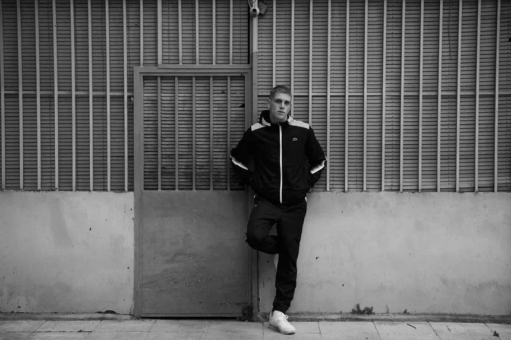

Historia
Al Safir es una de las caras más visibles del rap underground de Madrid. Proveniente de Las Matas, empezó en el año 2013 bajo el sobrenombre Shars que más tarde daría nombre a su serie de canciones más escuchada. Su primera canción Audi, subida en el canal de Dirty Dogz, ya sentaba los principios de su estilo crudo, representativo de los chavales provenientes de la sierra en aquella época.
Durante esta primera época demostraría su gran talento en cuanto a flow y rimas, creando muchos de sus himnos como Caraperro, Amira y la canción que le llevaría a la fama años después, Shars 2014. En estos años también colaboró con grandes nombres como Doser, integrante de la Gadafi Click; Mauri, procedente de Matasvandals; o Chalo, perteneciente a la Ozono Crew.
Años después, tras haber pasado una temporada en la cárcel de Alcalá-Meco y haber cambiado a su alias actual, volvió a crear temas con un estilo más relajado y chuleta, dejando ver sus influencias del rap estadounidense. Volvió al panorama con Peaky Blinders junto a Mauri en 2019 y se centró en su carrera musical, sacando en 2020 su primer LP Blow Up. Tras eso empezó su éxito, lanzando un recopilatorio de sus canciones antiguas ese mismo año y otros tres LPs: Madrid V en 2022, Black Ops en 2024 y más recientemente Príncipe en 2026. Ha colaborado con grandísimos nombres como Gloosito o Natos y Waor, pero sin separarse de sus raíces, siguiendo a día de hoy colaborando con sus amigos de toda la vida.